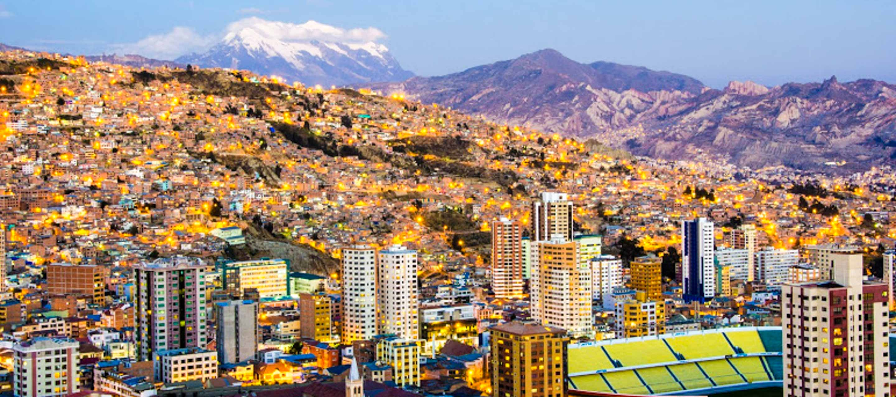

Jose Sebastian Escobar Salinas
About Me
My name is Jose Sebastian Escobar Salinas. I am 30 years old and I am from Bolivia. I have been living in Utah for the almost past 2 years. I am currently a student at Brigham Young University - Idaho, where I am studying Software Development. I am passionate about technology and I am excited to learn more about web development in this course.
La Paz, Bolivia

As I mentioned before, I am from Bolivia. Specifically, I am from La Paz, which is the administrative capital of Bolivia. La Paz is a city that is located in the western part of Bolivia, and it is known for its unique geography, as it is situated in a valley surrounded by mountains. The city has a rich cultural heritage, with a mix of indigenous and Spanish influences. It is also known for its vibrant markets, where you can find a variety of traditional Bolivian products, such as textiles, pottery, and food.
Hobbies and Interests
In my free time, I enjoy playing video games, watching movies, and spending time with my family and friends. I also enjoy traveling and exploring new places. One of my favorite hobbies is doing sports, and I love exercising and staying fit. I am also interested in learning new programming languages and technologies, and I am always looking for ways to improve my skills in software development.